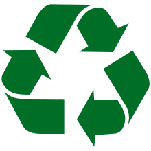

Czym jest recyckling?
Recykling (recyklizacja, recyrkulacja, ang. recycling) – jedna z metod ochrony środowiska naturalnego. Jej celem jest ograniczenie zużycia surowców naturalnych oraz zmniejszenie ilości odpadów. Recykling obejmuje odzyskiwanie surowców z produktów odpadowych i wykorzystywanie ich do produkcji nowych, poszukiwanych towarów. Materiały, które nadają się do ponownego wykorzystania, bywają opatrzone kodem recyklingu.
Co nam daje recyckling?
Recykling przynosi wiele korzyści, wśród których znajdują się: Zmniejszenie zużycia energii, a co za tym idzie – redukcja wydatków. Bezpłatne pozbycie się niepotrzebnych odpadów z gospodarstw domowych. Obniżenie zużycia surowców naturalnych.


Jak recycklingowac?
Największą część pozyskiwanych do recyklingu odpadów stanowią śmieci z gospodarstw domowych. Mieszkańcy w celu uzyskania niższej ceny za wywóz nieczystości mogą się zobowiązać do ich segregacji. Na osiedlach ustawiane są oznakowane odpowiednimi kolorami kontenery, a w przypadku domków jednorodzinnych często zdarzają się oznakowane worki, które w odpowiednim terminie wystawiane są przed posesję. Odpady dzielone są na 4 podstawowe grupy: papier - kontener lub worki w kolorze niebieskim, plastik - kontener lub worki w kolorze żółtym, szkło - kontener lub worki w kolorze zielonym (szkło kolorowe) lub biały (szkło białe), metale - kontener lub worki w kolorze czerwonym lub pomarańczowym.
Poradnik jak sergerowac smieci
Pierwszym krokiem do wprowadzenia w Polsce segregowania odpadów była tzw. reforma śmieciowa w 2013 r. Umożliwiła ona wprowadzenie w miastach i gminach podziału segregowanych odpadów na 3 (papier, metal i plastik, szkło) lub 2 frakcje (suche i mokre). W połowie 2017 r. weszło w życie rozporządzenie, które zobowiązuje samorządy do wprowadzenia segregacji odpadów na 5 frakcji: nowej – bioodpady, plastik i metal, papier, szkło, odpady zmieszane. Obowiązkowo ten podział musi być wprowadzony do 2022 r.